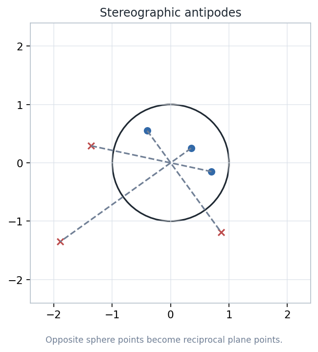
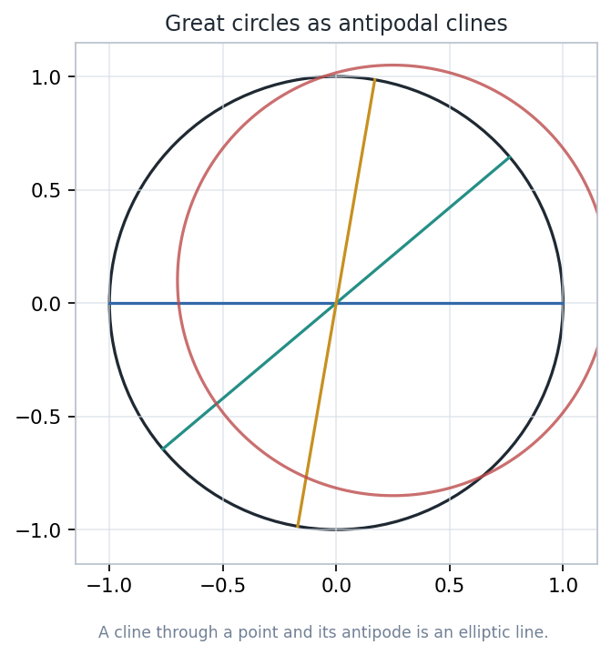
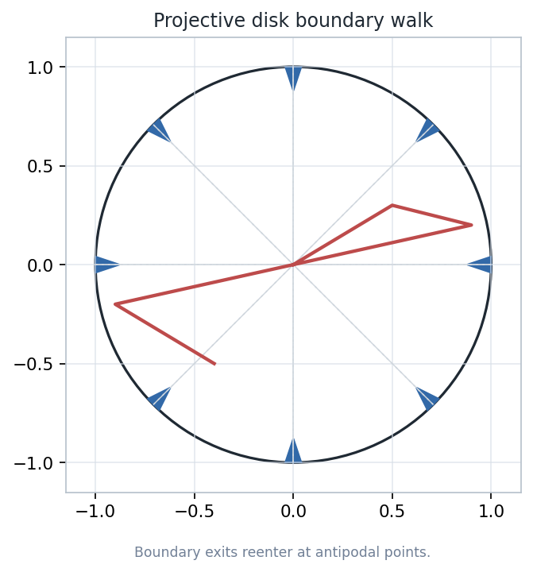
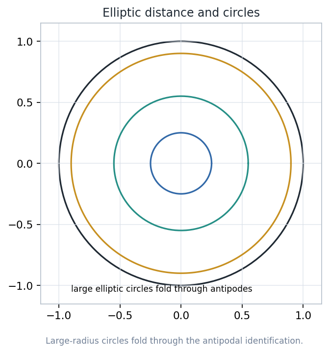
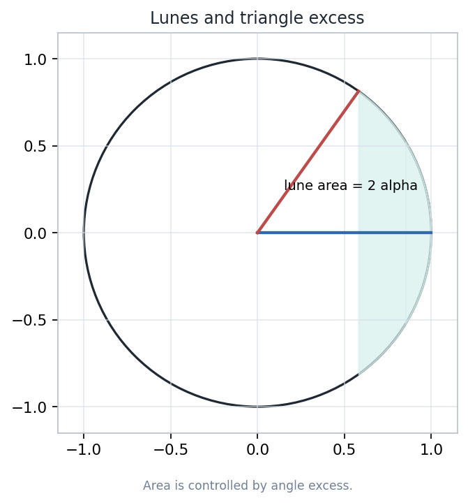
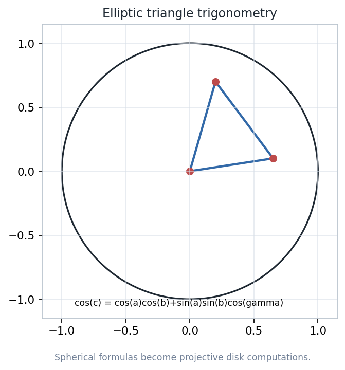

A projective version of the sphere: pair antipodal points, draw great circles as lines, and measure positive curvature by triangle excess.
Use stereographic coordinates without forgetting the hidden sphere.
Declare antipodal points to be one geometric point.
Let elliptic lines be great circles in the quotient model.
Read area from angle excess instead of angle defect.
Source span: printed pages 121-144; PDF pages 131-154.
The chapter is best taught as a sequence of model changes, with every formula attached to a visible invariant.

Stereographic projection turns diametrically opposed sphere points into reciprocal plane points.
For \(z \in \mathbb C^+\), the antipodal partner is
Equivalently, finite partners satisfy \(z\overline{w}=-1\). They lie on the same Euclidean line through the origin, on opposite sides.
A cline is a line or circle in the extended plane. It becomes an elliptic line exactly when it is closed under antipodes.

A cline \(C\) is a great circle when
Inversions are not imported by analogy; they are what spherical reflections become after stereographic projection.
Reflecting \((a,b,c)\) across the equator gives \((a,b,-c)\). Their projected points stay on one ray and satisfy
So the equatorial reflection corresponds to inversion in the unit circle. General great-circle reflections correspond to inversions in great clines.
The transformation group is the set of Mobius maps that send antipodal pairs to antipodal pairs.
A transformation \(T\) belongs to \(S\) when
A convenient normal form is
The closed unit disk is a coordinate chart for \(P^2\): each boundary point is identified with its opposite boundary point.

The boundary circle is not an edge of the world. Crossing at \(e^{i\theta}\) reenters at \(-e^{i\theta}\).
This is why two elliptic lines always meet even when a Euclidean drawing tempts the word parallel.
Distances are shortest great-circle separations after antipodal identification, expressed in projective disk coordinates.
For finite coordinates, a useful expression is
Because antipodal points are identified in \(P^2\), geometric distance is read as the shorter representative separation.

Circles centered at the origin look familiar for small radius, then fold through antipodal identification as radius grows.
Euclidean intuition is reliable to first order.
For \(r<\pi/2\), circumference is smaller than Euclidean growth predicts.
The circle may be represented by pieces of paired clines inside the disk.
A lune is bounded by two elliptic lines; antipodal boundary identification makes the shaded region connected.

Move the lune vertex to the origin and integrate the projective disk area density.
Three lunes cover the projective plane once, and the triangle two extra times.
For an elliptic triangle with angles \(\alpha,\beta,\gamma\),
Therefore every nondegenerate elliptic triangle has angle sum greater than \(\pi\).
Normalize one vertex to the origin and place another on the real axis; the group \(S\) carries the result back to every triangle.

Right triangle corollary: if \(\gamma=\pi/2\), then \(\cos c=\cos a\cos b\).
Euclidean, hyperbolic, and elliptic geometry agree locally but disagree globally about parallels.
Through a point off a line, exactly one line avoids the given line.
The disk model admits multiple geodesics through the point that do not meet the given line.
Any two elliptic lines meet, because great circles meet on the sphere and antipodal points are identified.
The lesson is successful when learners can move between quotient language, disk pictures, and formulas without conflating them.